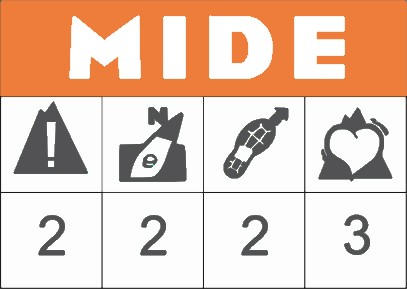

|
|
Cresterío de Siete Picos |
 |
El punto de encuentro será en el parking del Puerto de Navacerrada.
Quedaremos cerca de las taquillas de la estación, al lado del paso de cebra para cruzar la carretera de acceso al puerto.
Mapa
Foto Punto de encuentro

2026 ® Senderismo y Montaña C.U.F. Las Rozas.